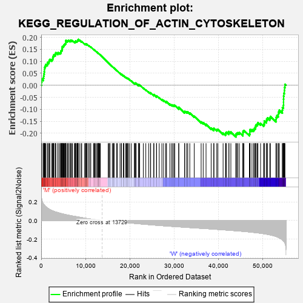
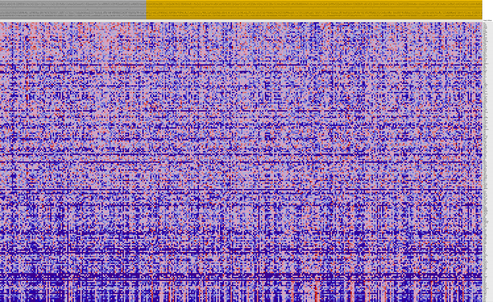
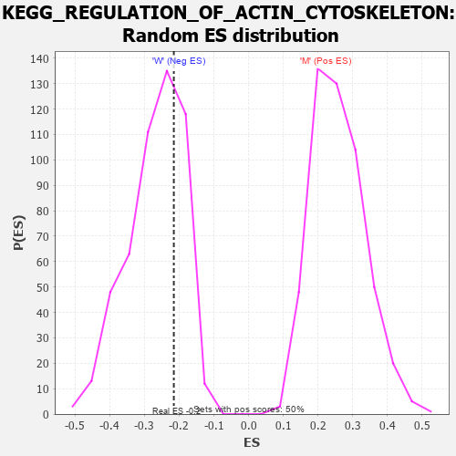

| Dataset | MUC16.MUC16.cls#M_versus_W.MUC16.cls#M_versus_W_repos |
| Phenotype | MUC16.cls#M_versus_W_repos |
| Upregulated in class | W |
| GeneSet | KEGG_REGULATION_OF_ACTIN_CYTOSKELETON |
| Enrichment Score (ES) | -0.21537131 |
| Normalized Enrichment Score (NES) | -0.8039317 |
| Nominal p-value | 0.69184893 |
| FDR q-value | 1.0 |
| FWER p-Value | 0.999 |

| PROBE | DESCRIPTION (from dataset) | GENE SYMBOL | GENE_TITLE | RANK IN GENE LIST | RANK METRIC SCORE | RUNNING ES | CORE ENRICHMENT | |
|---|---|---|---|---|---|---|---|---|
| 1 | EZR | na | 60 | 0.244 | 0.0132 | No | ||
| 2 | ACTG1 | na | 124 | 0.226 | 0.0254 | No | ||
| 3 | ITGA6 | na | 446 | 0.183 | 0.0303 | No | ||
| 4 | IQGAP3 | na | 564 | 0.175 | 0.0385 | No | ||
| 5 | DIAPH1 | na | 611 | 0.172 | 0.0478 | No | ||
| 6 | GIT1 | na | 678 | 0.168 | 0.0565 | No | ||
| 7 | MAPK1 | na | 734 | 0.165 | 0.0652 | No | ||
| 8 | DIAPH3 | na | 753 | 0.163 | 0.0744 | No | ||
| 9 | RHOA | na | 900 | 0.155 | 0.0809 | No | ||
| 10 | IQGAP1 | na | 1046 | 0.148 | 0.0870 | No | ||
| 11 | CRK | na | 1385 | 0.135 | 0.0888 | No | ||
| 12 | IQGAP2 | na | 1466 | 0.132 | 0.0951 | No | ||
| 13 | MAP2K1 | na | 1733 | 0.124 | 0.0976 | No | ||
| 14 | ITGB7 | na | 1803 | 0.122 | 0.1035 | No | ||
| 15 | PIP5K1B | na | 1948 | 0.118 | 0.1078 | No | ||
| 16 | NRAS | na | 2362 | 0.108 | 0.1067 | No | ||
| 17 | ITGB4 | na | 2567 | 0.104 | 0.1091 | No | ||
| 18 | BRAF | na | 2618 | 0.103 | 0.1142 | No | ||
| 19 | SLC9A1 | na | 2650 | 0.103 | 0.1197 | No | ||
| 20 | BCAR1 | na | 2797 | 0.100 | 0.1229 | No | ||
| 21 | CYFIP1 | na | 2865 | 0.099 | 0.1275 | No | ||
| 22 | ITGAE | na | 3176 | 0.094 | 0.1274 | No | ||
| 23 | GNA13 | na | 3203 | 0.093 | 0.1324 | No | ||
| 24 | CRKL | na | 3310 | 0.092 | 0.1359 | No | ||
| 25 | ROCK2 | na | 3753 | 0.085 | 0.1329 | No | ||
| 26 | PPP1CA | na | 3823 | 0.084 | 0.1366 | No | ||
| 27 | APC2 | na | 4181 | 0.080 | 0.1348 | No | ||
| 28 | PPP1CC | na | 4388 | 0.077 | 0.1355 | No | ||
| 29 | ARPC5 | na | 4457 | 0.076 | 0.1388 | No | ||
| 30 | EGFR | na | 4469 | 0.076 | 0.1430 | No | ||
| 31 | WASL | na | 4605 | 0.074 | 0.1449 | No | ||
| 32 | ARHGEF12 | na | 4702 | 0.073 | 0.1474 | No | ||
| 33 | EGF | na | 4744 | 0.072 | 0.1509 | No | ||
| 34 | MYH9 | na | 4763 | 0.072 | 0.1548 | No | ||
| 35 | MYH14 | na | 4779 | 0.072 | 0.1588 | No | ||
| 36 | CSK | na | 4805 | 0.071 | 0.1625 | No | ||
| 37 | MAP2K2 | na | 4994 | 0.069 | 0.1632 | No | ||
| 38 | CHRM1 | na | 5093 | 0.068 | 0.1654 | No | ||
| 39 | PAK3 | na | 5137 | 0.068 | 0.1686 | No | ||
| 40 | SOS1 | na | 5248 | 0.067 | 0.1705 | No | ||
| 41 | VAV2 | na | 5369 | 0.065 | 0.1722 | No | ||
| 42 | ITGA3 | na | 5481 | 0.064 | 0.1739 | No | ||
| 43 | WAS | na | 5561 | 0.063 | 0.1762 | No | ||
| 44 | CFL1 | na | 5569 | 0.063 | 0.1798 | No | ||
| 45 | RAF1 | na | 5570 | 0.063 | 0.1835 | No | ||
| 46 | MYL5 | na | 5584 | 0.063 | 0.1870 | No | ||
| 47 | ITGB2 | na | 5928 | 0.060 | 0.1842 | No | ||
| 48 | ARHGEF1 | na | 6042 | 0.058 | 0.1856 | No | ||
| 49 | ACTN3 | na | 6128 | 0.057 | 0.1874 | No | ||
| 50 | MYLK2 | na | 6469 | 0.054 | 0.1844 | No | ||
| 51 | MYL12A | na | 6526 | 0.053 | 0.1866 | No | ||
| 52 | RAC2 | na | 6694 | 0.052 | 0.1865 | No | ||
| 53 | NCKAP1 | na | 6863 | 0.050 | 0.1864 | No | ||
| 54 | FN1 | na | 7057 | 0.049 | 0.1858 | No | ||
| 55 | PIP5K1A | na | 7486 | 0.045 | 0.1807 | No | ||
| 56 | VAV1 | na | 7635 | 0.044 | 0.1806 | No | ||
| 57 | PIK3CG | na | 7764 | 0.043 | 0.1808 | No | ||
| 58 | LIMK1 | na | 7773 | 0.043 | 0.1832 | No | ||
| 59 | CYFIP2 | na | 7814 | 0.043 | 0.1850 | No | ||
| 60 | ITGB8 | na | 8068 | 0.041 | 0.1828 | No | ||
| 61 | PIK3CB | na | 8139 | 0.040 | 0.1838 | No | ||
| 62 | FGF11 | na | 8203 | 0.039 | 0.1850 | No | ||
| 63 | PFN1 | na | 8263 | 0.039 | 0.1862 | No | ||
| 64 | PAK6 | na | 8272 | 0.039 | 0.1884 | No | ||
| 65 | RRAS2 | na | 8315 | 0.039 | 0.1899 | No | ||
| 66 | ITGA2 | na | 8372 | 0.038 | 0.1911 | No | ||
| 67 | DIAPH2 | na | 8709 | 0.035 | 0.1871 | No | ||
| 68 | PFN3 | na | 9046 | 0.032 | 0.1829 | No | ||
| 69 | PIKFYVE | na | 9148 | 0.032 | 0.1829 | No | ||
| 70 | PAK1 | na | 9813 | 0.026 | 0.1724 | No | ||
| 71 | PTK2 | na | 10001 | 0.025 | 0.1704 | No | ||
| 72 | ITGA4 | na | 10043 | 0.024 | 0.1711 | No | ||
| 73 | ARHGEF4 | na | 10118 | 0.024 | 0.1712 | No | ||
| 74 | PXN | na | 10267 | 0.023 | 0.1698 | No | ||
| 75 | PIK3R3 | na | 10272 | 0.023 | 0.1711 | No | ||
| 76 | ACTB | na | 10388 | 0.022 | 0.1703 | No | ||
| 77 | PIP4K2C | na | 10755 | 0.019 | 0.1648 | No | ||
| 78 | RAC3 | na | 10829 | 0.019 | 0.1646 | No | ||
| 79 | FGFR2 | na | 11154 | 0.017 | 0.1597 | No | ||
| 80 | BDKRB2 | na | 11196 | 0.016 | 0.1599 | No | ||
| 81 | VAV3 | na | 11811 | 0.012 | 0.1494 | No | ||
| 82 | ARHGAP35 | na | 11976 | 0.011 | 0.1471 | No | ||
| 83 | SOS2 | na | 12058 | 0.011 | 0.1463 | No | ||
| 84 | SSH2 | na | 12212 | 0.010 | 0.1441 | No | ||
| 85 | CD14 | na | 12478 | 0.008 | 0.1397 | No | ||
| 86 | BRK1 | na | 12709 | 0.006 | 0.1359 | No | ||
| 87 | NCKAP1L | na | 12843 | 0.006 | 0.1338 | No | ||
| 88 | MYL12B | na | 12868 | 0.005 | 0.1337 | No | ||
| 89 | CHRM4 | na | 12925 | 0.005 | 0.1330 | No | ||
| 90 | MYL2 | na | 12928 | 0.005 | 0.1332 | No | ||
| 91 | MAPK3 | na | 13096 | 0.004 | 0.1304 | No | ||
| 92 | ACTN4 | na | 13204 | 0.003 | 0.1286 | No | ||
| 93 | PAK2 | na | 13346 | 0.002 | 0.1262 | No | ||
| 94 | ARPC5L | na | 15121 | -0.001 | 0.0940 | No | ||
| 95 | LIMK2 | na | 15312 | -0.001 | 0.0907 | No | ||
| 96 | FGFR4 | na | 15492 | -0.002 | 0.0875 | No | ||
| 97 | FGF12 | na | 15538 | -0.002 | 0.0869 | No | ||
| 98 | ITGAL | na | 16055 | -0.005 | 0.0778 | No | ||
| 99 | ITGA10 | na | 16276 | -0.006 | 0.0742 | No | ||
| 100 | CDC42 | na | 16352 | -0.007 | 0.0732 | No | ||
| 101 | FGF6 | na | 16467 | -0.008 | 0.0716 | No | ||
| 102 | ITGB6 | na | 17054 | -0.011 | 0.0616 | No | ||
| 103 | WASF2 | na | 17195 | -0.011 | 0.0597 | No | ||
| 104 | GNA12 | na | 17795 | -0.015 | 0.0497 | No | ||
| 105 | APC | na | 18080 | -0.016 | 0.0455 | No | ||
| 106 | HRAS | na | 18142 | -0.016 | 0.0453 | No | ||
| 107 | FGF20 | na | 18546 | -0.018 | 0.0391 | No | ||
| 108 | FGF22 | na | 18626 | -0.019 | 0.0388 | No | ||
| 109 | ITGAV | na | 18634 | -0.019 | 0.0397 | No | ||
| 110 | PIK3R2 | na | 19058 | -0.021 | 0.0333 | No | ||
| 111 | PAK4 | na | 19239 | -0.022 | 0.0313 | No | ||
| 112 | ARPC4 | na | 19394 | -0.022 | 0.0298 | No | ||
| 113 | FGF18 | na | 19532 | -0.023 | 0.0287 | No | ||
| 114 | ITGB1 | na | 19692 | -0.024 | 0.0272 | No | ||
| 115 | ARAF | na | 19974 | -0.025 | 0.0235 | No | ||
| 116 | ARPC2 | na | 20361 | -0.027 | 0.0181 | No | ||
| 117 | PIK3CD | na | 21039 | -0.030 | 0.0076 | No | ||
| 118 | ITGAM | na | 21069 | -0.030 | 0.0088 | No | ||
| 119 | TMSB4X | na | 21244 | -0.031 | 0.0074 | No | ||
| 120 | GNG12 | na | 21246 | -0.031 | 0.0092 | No | ||
| 121 | FGF17 | na | 21449 | -0.032 | 0.0074 | No | ||
| 122 | RAC1 | na | 21990 | -0.034 | -0.0004 | No | ||
| 123 | ITGA11 | na | 22015 | -0.034 | 0.0012 | No | ||
| 124 | PPP1CB | na | 22043 | -0.034 | 0.0027 | No | ||
| 125 | ITGB5 | na | 22239 | -0.035 | 0.0012 | No | ||
| 126 | ITGAX | na | 23058 | -0.038 | -0.0114 | No | ||
| 127 | ARHGEF7 | na | 23625 | -0.041 | -0.0192 | No | ||
| 128 | F2 | na | 24265 | -0.043 | -0.0283 | No | ||
| 129 | DOCK1 | na | 24675 | -0.045 | -0.0331 | No | ||
| 130 | FGD3 | na | 24721 | -0.045 | -0.0313 | No | ||
| 131 | FGF23 | na | 25406 | -0.048 | -0.0409 | No | ||
| 132 | ARPC1A | na | 25456 | -0.048 | -0.0390 | No | ||
| 133 | BAIAP2 | na | 26032 | -0.050 | -0.0465 | No | ||
| 134 | PFN2 | na | 26073 | -0.050 | -0.0442 | No | ||
| 135 | ITGA2B | na | 26652 | -0.052 | -0.0516 | No | ||
| 136 | PDGFA | na | 27255 | -0.055 | -0.0594 | No | ||
| 137 | SSH3 | na | 27638 | -0.056 | -0.0630 | No | ||
| 138 | PIK3R5 | na | 28119 | -0.058 | -0.0683 | No | ||
| 139 | SCIN | na | 28302 | -0.058 | -0.0682 | No | ||
| 140 | MYL7 | na | 29055 | -0.061 | -0.0783 | No | ||
| 141 | MYH10 | na | 29444 | -0.062 | -0.0817 | No | ||
| 142 | BDKRB1 | na | 29709 | -0.063 | -0.0828 | No | ||
| 143 | PDGFRA | na | 29978 | -0.064 | -0.0839 | No | ||
| 144 | ARHGEF6 | na | 30166 | -0.064 | -0.0835 | No | ||
| 145 | PIK3CA | na | 31062 | -0.067 | -0.0958 | No | ||
| 146 | ARPC1B | na | 31065 | -0.067 | -0.0919 | No | ||
| 147 | TIAM1 | na | 32371 | -0.071 | -0.1114 | No | ||
| 148 | FGF7 | na | 32420 | -0.072 | -0.1080 | No | ||
| 149 | MSN | na | 32843 | -0.073 | -0.1114 | No | ||
| 150 | MYLPF | na | 33098 | -0.074 | -0.1117 | No | ||
| 151 | PDGFC | na | 33556 | -0.075 | -0.1156 | No | ||
| 152 | TMSB4XP8 | na | 34556 | -0.078 | -0.1291 | No | ||
| 153 | PIP4K2B | na | 36120 | -0.083 | -0.1526 | No | ||
| 154 | SSH1 | na | 36587 | -0.084 | -0.1561 | No | ||
| 155 | ITGAD | na | 37228 | -0.086 | -0.1626 | No | ||
| 156 | PDGFD | na | 38382 | -0.090 | -0.1783 | No | ||
| 157 | RDX | na | 38971 | -0.092 | -0.1835 | No | ||
| 158 | ITGA5 | na | 39004 | -0.092 | -0.1787 | No | ||
| 159 | FGFR3 | na | 39647 | -0.094 | -0.1848 | No | ||
| 160 | FGF5 | na | 39908 | -0.095 | -0.1839 | No | ||
| 161 | PAK5 | na | 41080 | -0.099 | -0.1994 | No | ||
| 162 | INSRR | na | 41633 | -0.101 | -0.2034 | No | ||
| 163 | PIK3R1 | na | 41671 | -0.101 | -0.1981 | No | ||
| 164 | TIAM2 | na | 41861 | -0.102 | -0.1956 | No | ||
| 165 | CHRM5 | na | 42383 | -0.104 | -0.1989 | No | ||
| 166 | ROCK1 | na | 42394 | -0.104 | -0.1930 | No | ||
| 167 | KRAS | na | 42835 | -0.105 | -0.1948 | No | ||
| 168 | PDGFB | na | 43968 | -0.110 | -0.2089 | Yes | ||
| 169 | CHRM3 | na | 43983 | -0.110 | -0.2027 | Yes | ||
| 170 | VCL | na | 44196 | -0.110 | -0.2001 | Yes | ||
| 171 | FGF9 | na | 44428 | -0.111 | -0.1978 | Yes | ||
| 172 | FGF1 | na | 44759 | -0.113 | -0.1971 | Yes | ||
| 173 | FGF21 | na | 45534 | -0.116 | -0.2044 | Yes | ||
| 174 | FGF4 | na | 45558 | -0.116 | -0.1980 | Yes | ||
| 175 | MRAS | na | 45579 | -0.116 | -0.1916 | Yes | ||
| 176 | INS | na | 45785 | -0.117 | -0.1884 | Yes | ||
| 177 | ITGA8 | na | 47015 | -0.122 | -0.2036 | Yes | ||
| 178 | PIP5K1C | na | 47123 | -0.123 | -0.1983 | Yes | ||
| 179 | PFN4 | na | 47126 | -0.123 | -0.1911 | Yes | ||
| 180 | ABI2 | na | 47180 | -0.123 | -0.1848 | Yes | ||
| 181 | FGF8 | na | 47610 | -0.126 | -0.1852 | Yes | ||
| 182 | MYL10 | na | 48002 | -0.127 | -0.1848 | Yes | ||
| 183 | PIP4K2A | na | 48127 | -0.128 | -0.1795 | Yes | ||
| 184 | FGF14 | na | 48356 | -0.129 | -0.1761 | Yes | ||
| 185 | ARPC3 | na | 48426 | -0.130 | -0.1697 | Yes | ||
| 186 | MYLK3 | na | 48537 | -0.130 | -0.1640 | Yes | ||
| 187 | ITGB3 | na | 48809 | -0.132 | -0.1612 | Yes | ||
| 188 | PDGFRB | na | 48945 | -0.133 | -0.1558 | Yes | ||
| 189 | WASF1 | na | 49543 | -0.137 | -0.1587 | Yes | ||
| 190 | FGD1 | na | 50227 | -0.141 | -0.1628 | Yes | ||
| 191 | F2R | na | 50380 | -0.142 | -0.1572 | Yes | ||
| 192 | FGF19 | na | 50394 | -0.142 | -0.1490 | Yes | ||
| 193 | MOS | na | 50832 | -0.146 | -0.1484 | Yes | ||
| 194 | TMSB4Y | na | 50909 | -0.147 | -0.1412 | Yes | ||
| 195 | ACTN2 | na | 51112 | -0.148 | -0.1361 | Yes | ||
| 196 | RRAS | na | 51615 | -0.153 | -0.1362 | Yes | ||
| 197 | FGF3 | na | 51774 | -0.154 | -0.1300 | Yes | ||
| 198 | GSN | na | 53015 | -0.170 | -0.1425 | Yes | ||
| 199 | FGF10 | na | 53062 | -0.171 | -0.1333 | Yes | ||
| 200 | FGFR1 | na | 53241 | -0.174 | -0.1263 | Yes | ||
| 201 | FGF16 | na | 53543 | -0.180 | -0.1212 | Yes | ||
| 202 | ENAH | na | 53602 | -0.181 | -0.1115 | Yes | ||
| 203 | PPP1R12A | na | 53787 | -0.186 | -0.1039 | Yes | ||
| 204 | ACTN1 | na | 54464 | -0.207 | -0.1041 | Yes | ||
| 205 | FGF13 | na | 54485 | -0.207 | -0.0923 | Yes | ||
| 206 | ITGA9 | na | 54702 | -0.218 | -0.0833 | Yes | ||
| 207 | CHRM2 | na | 54727 | -0.219 | -0.0709 | Yes | ||
| 208 | ITGA1 | na | 54730 | -0.220 | -0.0580 | Yes | ||
| 209 | CFL2 | na | 54752 | -0.221 | -0.0454 | Yes | ||
| 210 | ITGA7 | na | 54800 | -0.224 | -0.0331 | Yes | ||
| 211 | FGF2 | na | 54930 | -0.231 | -0.0218 | Yes | ||
| 212 | MYL9 | na | 54945 | -0.232 | -0.0084 | Yes | ||
| 213 | MYLK | na | 55053 | -0.243 | 0.0039 | Yes |

